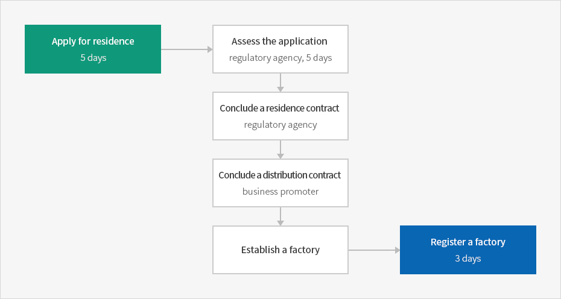
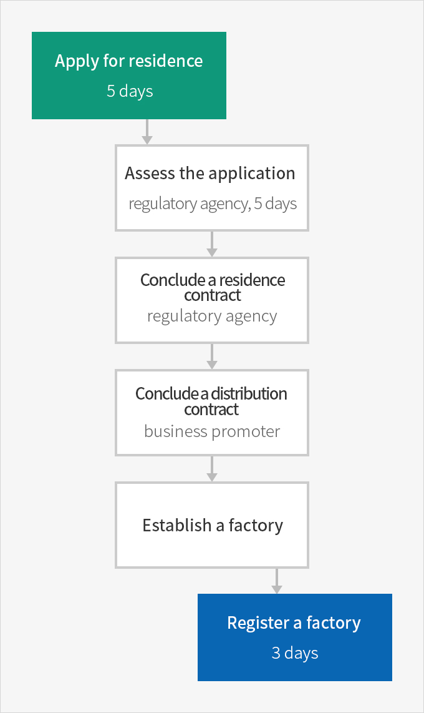
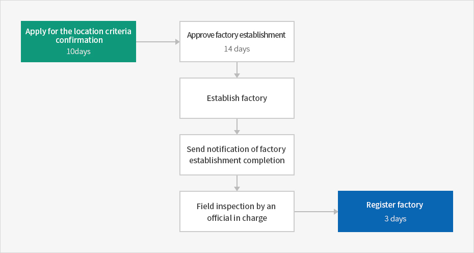
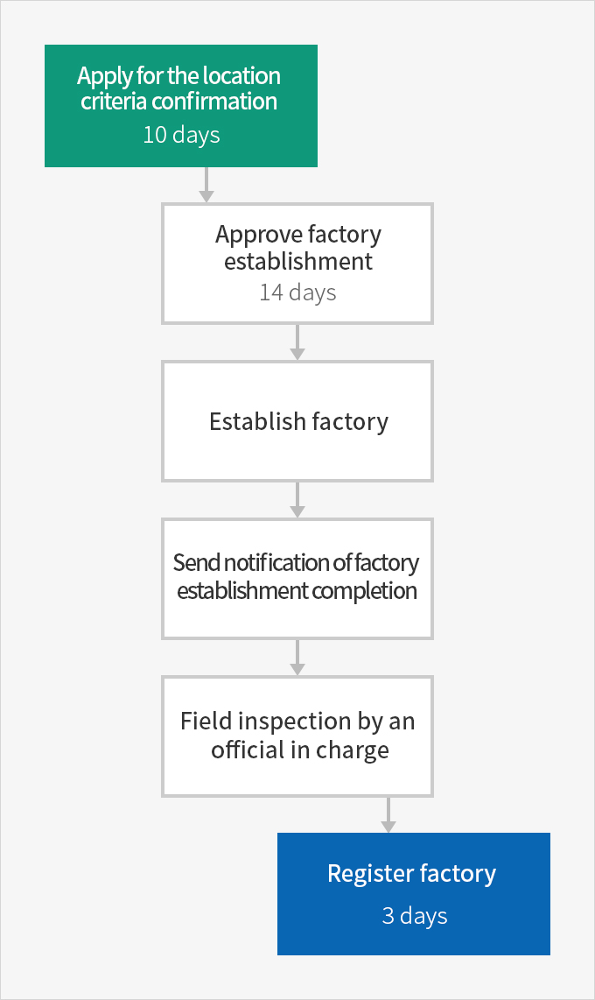

Establishment Procedures
- Home
- Management·Living
- Factory Establishment
- Establishment Procedures
Factory Establishment
A factory is a site of a manufacturing business, usually a complex consisting of buildings, factory buildings, or subsidiary facilities. The manufacturing business must be included in the Korean Standard Industry Classification promulgated by the Korean Commissioner of Statistics.
Factory Establishment in Industrial Complexes
Industrial complexes, unlike individual locations, are fully equipped, and it is therefore not necessary to apply for many additional licenses or permissions. As the types of businesses are limited for each complex, reviewing time can be significantly reduced. Industrial complexes submit residence contract applications to management institutions which have the same administrative effects as applications for approval of factory establishment at individual locations.
In general, an approval is given within five days after an application, or within ten days if a consultation with a relevant organization is necessary.
After receiving an approval of occupancy, a procedure from the factory establishment, a completion report, and a confirmation by an official in charge following a site visit, the factory registration procedure is the same as for an individual location.
Factory Establishment and Approval Procedure



- Apply for residence (5 days)
- Assess the application (regulatory agency, 5 days)
- Conclude a residence contract (regulatory agency)
- Conclude a distribution contract (business promoter)
- Establish a factory
- Register a factory (3 days)

Factory Establishment at Individual Locations
Factory establishment at individual locations under the Act on Industrial Integration and Factory Establishment
There are many laws related to factory establishment at individual locations; therefore, it is important to thoroughly review all laws and regulations. An application will be reviewed and approved within twenty days of submission in accordance with the Factory Establishment Approval System of Korea. If an application is submitted to the offices of a local government that has jurisdiction over the candidate site, an approval will be given within fourteen days. If agenda processing is applied, the approval period will be shortened to within seven days.- Agenda processing : This is a system that improves efficiency in administrative works and services by collectively processing the authorization and permission, which would be otherwise executed under different laws.


- Apply for the location criteria confirmation (10 days)
- Approve factory establishment (14 days)
- Establish factory
- Send notification of factory establishment completion
- Field inspection by an official in charge
- Register factory (3 days)

-
Apply for the location criteria confirmationAn applicant may check the possibility of factory establishment on the site in advance. The result is reported within ten days of filing an application.
-
Approve factory establishmentAfter the factory establishment has been approved, land leveling, infrastructure installation, and construction are carried out.
-
Establish factoryIf the factory establishment completion is reported within two months following construction and installation of machinery and equipment, an official visits the site to check whether the factory is operating in accordance with the original application. If no issues are found, the factory can be registered within three days of the notification of factory establishment completion.
Factory Establishment at Individual Locations under the Support for Small- and Medium-sized Enterprises Establishment Act
제조업 중소기업 창업 부담금 면제 내용
| 부담금 | 관련법 |
|---|---|
| 분담금 | 「지방자치법」 제138조 |
| 농지보전 부담금 | 「농지법」 제38조 제①항 |
| 대체초지 조성비 | 「초지법」 제23조 제⑥항 |
| 기본 부과금 | 「대기환경보전법」 제35조 제②항 제1호 |
| 기본배출 부과금 | 「수질 및 수생태계 보전에 관한 법률」 제41조 제①항 제1호 |
| 부담금 | 「전기사업법」 제51조 제①항 |
| 폐기물 부담금 | 「자원의 절약과 재활용촉진에 관한 법률」 제12조 제①항 |
| 물이용 부담금 | 「한강수계 상수원 수질개선 및 주민지원 등에 관한 법률」제19조 제①항 |
| 「금강수계 물관리 및 주민지원 등에 관한 법률」제30조 제①항 | |
| 「낙동강수계 물관리 및 주민지원 등에 관한 법률」제32조 제①항 | |
| 「영산강·섬진강 수계 물관리 및 주민지원 등에 관한 법률」제30조 제①항 | |
| 대체산림 지원 조성비 | 「산지관리법」 제19조 제①항 |